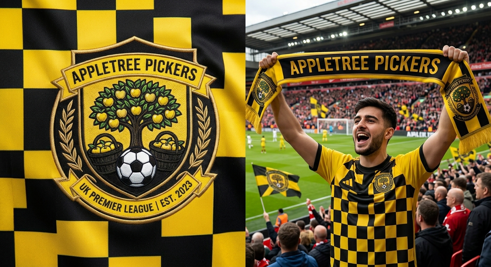

Fantasy Football ⚽
Welcome to the home of Appletree Pickers! Here I track squad selections, weekly match tactics, chip strategy, and mini-league standings.

Squad & Matchday Hub
Managing the Appletree Pickers takes careful fixture planning, price change monitoring, and making the right captaincy calls each Gameweek.
You can check matchday points, set line-ups, and manage transfers directly on the official Fantasy Premier League Team Page.